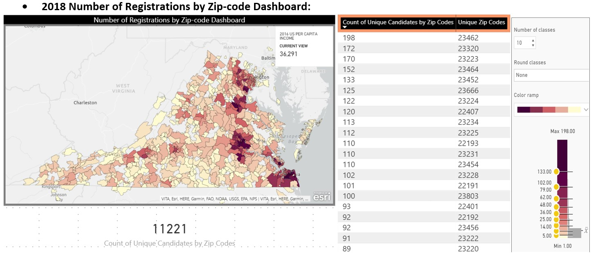
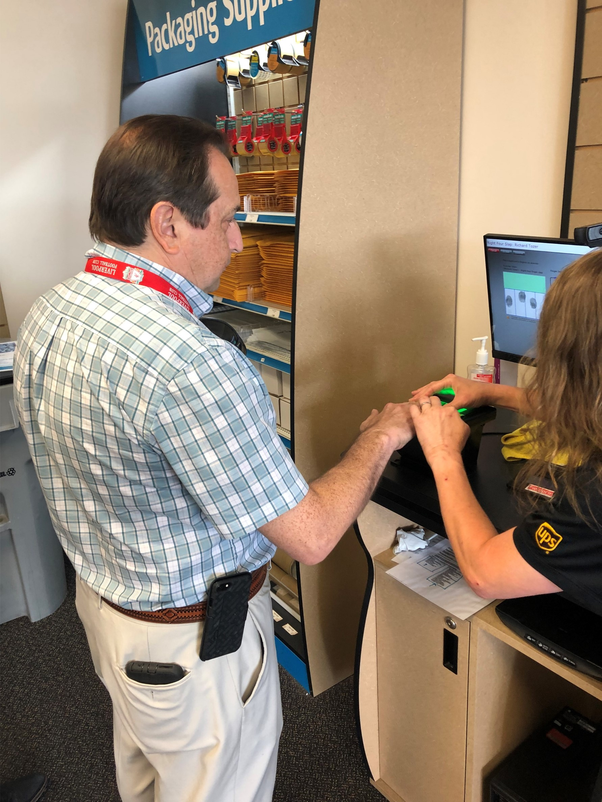

Work Experience
NewMarket Corporation: 07/2022 - present
NewMarket Corporation is the parent company of Afton Chemical Corporation and Ethyl Corporation.
My role as a Data Scientist is to help further improve and provide reliable and actionable data to the business.
- Research, design and prototype robust and scalable predictive models using machine learning, data mining, and statistical modeling concepts to answer key business problems
- Build tools and support structures needed to analyze data, perform elements of data cleaning, feature selection and feature engineering and organize experiments in conjunction with best practices
- Work with engineering to deploy algorithms and models into robust production models
- Keep current with the latest developments in the field by continuous learning and adapting new methods relevant to the problems at hand
FZG Random Forest regression and classification prediciton model
Developed a precise and accurate Random Forest predictive model that predicts FZG (Forschungsstelle fur Zahnrader und Getriebebau), Failure Load Stage; increasing prediction accuracy 26.22% above the No Information Rate (NIR of 53.8%) to 80% as well as increasing precision (RMSE < 2*Test Precision) by 0.53 (RMSE). The model was then deployed to NewMarket's Formulator Tool Kit enabling better, faster, cheaper product development for the “Driveline” business unit. Read in initial dataset containing almost 7,000 observations and over 1,600 variables. FailureLoadStage, the Y variable, contained non-numeric information therefore a list was provided to the Driveline engineer to create a “mapping” or corrected numeric value for each. Additional checks such as component group reassignments were needed before modeling on the data. The final dataset was a sample size of just under 5,000 observations and almost 50 predicting variables. Parameters and component groups: Driveline lubricants (used for FZG test), similar to Fuels and other liquids, must contain a formulation of 100%. This concept is used in the modeling phase to make sure the model is being trained to capture every “input” group needed for formulation. The FZG model uses FluidCode prefix, important components, component group totals and base oil properties as parameters. FluidCodes have unique formulations that usually consist of component group totals and base oil group totals. Component group totals are made up of individual components (HITEC 4313 etc.) and are the total amount for a particular component group (antioxidants, detergents, friction modifiers, etc.). Components are then comprised of raw materials but it’s unusual to model on a fraction of a component. There are many different types of Base Oils from different suppliers therefore models are typically built using the Base Oil Properties (a formulation of the base oil). In the case of FZG, multiple types of FluidCodes were used therefore we used the prefixes to model on as a calculated value (ATF/AT/RAT, GOR/GO, ETF, TOR/TOB and DCF). Dimensionality reduction: Due to the immense number of columns, dimension reduction was first manually completed by keeping only columns that contained 90% of non-zero values. In addition to this, several filtering requests were made by the business to further narrow down the data (such as temperature, test lab etc.) as well as removing rows that were completely empty with data. Model development and assessment: Multiple models were built with various hyperparameter “tuning” methods to predict the FailureLoadStage parameter - using machine learning models such as generalized linear models, neural networks and Random Forest. The data was then run through a series of model assessment techniques (15 seeds of 5 fold cross validation through a variety of hyperparameter tuning) to determine variable importance (Fig. 1) Final Model: A final model was then built using all data. This model was then used to determine the Correlation Coefficient (Fig. 3) The Virginia State Corporation Commission is an independent State Agency, regulation of public utilities, insurance, financial institutions, securities, retail franchising, railroads; commonwealth’s central filing office for companies. I took on a variety of technical and data roles during my time at the Bureau of Insurance. The work involved using a variety of data querying, preprocessing, visualization and analysis; supporting several complex automated systems while providing advanced technical assistance. Work was performed with latitude for the exercise of independent judgment and decision making. Work was reviewed through conferences and evaluation of results. 
I was the primary analyst lead (specifically for the fingerprinting, analytics and renewal notice processes) of the largest agent licensing project the BOI has undertaken in over 30 years. In 2018 the Bureau introduced legislation to: eliminate the CPCU/CLU licensing exam waiver/exemption; eliminate the continuing education (CE) waiver/exemption; require birth-month/year renewals; and require fingerprinting for resident applicants. I have been the primary lead for the fingerprinting portion, statistics for birth-month/year renewals and played a large role in setting up communication methods for renewal and termination notices. Legislation changes started in January of 2022, implementation is complete, procedures were created and shared and issues/maintenance are ongoing. I then coordinated with Vertafore (vendor for Sircon system), the agent licensing section, the SCC’s Office of the Commission Comptroller and Data Integrators (our print/postal vendor) to setup email and mailing communication for multiple notice types. I reviewed and edited information within the SCC’s Invitation for Bid (IFB) to select a print vendor, directed implementation with the selected print vendor and am improving the process while creating internal procedures. Once the process was solidified, I trained Automated Systems’ staff on how to complete each month (until January 2024). Each month, careful facilitation is needed to generate, receive the files, confirm they are correct, provide to print vendor, validate letter proofs and follow up to confirm they have been sent. Mailings began, ongoing issues are assessed as needed (such as template configuration, SFTP move-it script changes, box.com setup for file transfer) and improvements of the process are underway. Supporting References:
My role in running advanced reports and data extraction concepts (from structured and unstructured data) amplified due to the increased need of emailing and other needed statistics. I complete analytics and advanced reports / data extraction via SQL, MS Access/Excel, MS Power BI and SAP Crystal to gather and organize large and complex data sets. To collect contact mailing requirements data, I’ve created a Excel form for the Bureau to use that specifies the fields and metadata available to select for mailing data pulls. To be able to pull accurate information from the database, I worked with Vertafore to create new contacts with reliable email data for electronic communication. Using data extraction techniques (data preparation, slicing, aggregating, null values, outliers etc.), I comprised two new company contact types (Government Relations and Company renewal) by pulling data from other contacts and multiple databases (such as Oracle DB1 and NAIC “quicklink”). Vertafore then created the new contact types with this data. Once Vertafore loaded the data, I did quality assurance testing to verify they were loaded into UAT and production environments. Since the new contacts are in the system, Automated Systems has enabled companies to be able to update the contacts themselves through the company address change portal. This is essentual to ensure the contacts are always updated and this has now allowed other users to be able to pull the contacts via a Sircon inquiry without having to complete the steps they otherwise would have (advanced SQL to join queries and use data aggregation techniques from multiple sources) to derive the contacts for mailings, company renewals and other uses. Other examples of scenarios I’ve pulled custom data reports and SQL queries include but are not limited to: SLB assessment missing forms notices, active & licensed surplus lines brokers, count of individual licensee expiration per month per year, closed ecases, PIN contacts with PIN numbers, uninsured motorist follow up letter recipients, etc. (cases vary by requests received) I volunteered to become part of a pilot group to do quality assurance (QA) testing with the NAIC’s new cloud database connection, Snowflake. I have completed initial training and am scheduled to meet with the NAIC to discuss the new connection. Security access for Bureau users is currently being discussed. After QA testing, I will play a major role in adapting our current functions over to this system and train the Bureau how to use it. The Bureau had a need to purchase a mass electronic communication system to have the ability to send out thousands of emails as it is less time consuming, more cost effective and more reliable than paper mailings. The Bureau spent approximately $221,601.75 (598,197 physical paper mailings) in FY2021. With companies, agencies, and individuals working from home, it’s increasingly important the Bureau adapts to the system infrastructure needed to deliver mass emails on important notice information. I analyzed post mailing costs to determine FY20 and 21 combined cost the Bureau approximately $328,565.30 whereas emailing would have cost $6,364 and tens if not hundreds of man hours pulling, putting together and mailing that information. The SCC’s Information of Technology Division (ITD) has an existing contract with an email vendor, SendGrid. I worked with individuals from the SCC (Clerk's Office, BOI-PCA, BOI-AS and ITD) to assess the above need for BOI to purchase its own SendGrid account. I was the primary analyst to research SendGrid and determined they could fulfil our requirements. Once it was agreed upon, I chose an appropriate subscription plan to purchase based on our projected demand volume. I then composed and submitted the justification memo to SCC's ITD. I initiated many meetings with multiple parties from SendGrid to coordinate the purchase of the web-based software account. Complications increased when setting up configuration, so I facilitated numerous meetings with ITD and multiple different SendGrid teams to configure the domain, confirm the IP address, update the new hostname and validate the CNAME records with VITA. Currently, I am in the process of vetting account verification with the SCC's Office of Commission Comptroller (Procurement), BOI office managers and the SendGrid representatives. Once this is complete extensive quality assurance testing will be done with multiple different batch emails and data extraction to verify the accuracy and success rate of the new system. Statistics will be recorded and analyzed as emails are sent out. When we have requests for unique reports or mailings, it is my job to pull the data and validate we are providing the correct information. When SendGrid is up and running, data will need to be collected for each mass email we do (as I do now). The Bureau administered a new law that facilitated balance billing of consumers for emergency and non-emergency ancillary services at an in-network facility. As described on our website - “If the insurer and out-of-network provider cannot agree on the payment amount for the service by the end of the good faith negotiation period, one of the parties can request that the dispute be settled through arbitration.” (scc.virginia.gov) In the event that each insurer and out-of-network provider cannot agree to an arbitrator on our arbitrator search system, the Bureau will provide a narrowed list for insurers and out-of-network providers to choose. The PCA division has pursued my direct involvement to enhance efficiency and reliability on the methods used to create a fair opportunity for insurers and out-of-network providers. Due to arbitrators updating the list so much (Fee Single Claim Dispute, Total Fee - Bundled Claim Dispute etc.), there is a need to create a dynamic system to increase efficiency. Five fair, random arbitrators will be chosen for insurers and the out-of-network providers to pick from. I am in the process of creating an algebraic optimization model with logical constraints to “bucket” the full list into 5 groups of similar prices. Since the list changes dynamically, I’ve been asked to create a model that will then randomly select one from each bucket, enabling the insurer and out-of-network provider to be able to have a choice of 5 equally random and fair arbitrators. I am in the process of collecting the data, writing the objective, creating the algebraic formulation, forming the decision variables and building out the model. Meetings are scheduled to go over progress. Extensive testing will be needed to ensure the model is fair and accurate before implementing use to serve the insurers and out-of-network providers. In 2020, the Company Licensing Renewal overcame a monumental shift from paper mailings to emailing. I lead and directed this change into place by extracting reliable contact emails from multiple data sources (Vertafore and NAIC) and multiple contact types while ensuring the renewal reminders were delivered in a timely manner to the best suited recipients of over 2,000 companies. It being the first time this had been done, this was a major milestone to increase efficiency and accuracy to deliver the information. Over the course of about 4 months, I planned, facilitated, revised and acted as a project manager to guarantee the project was on time and well communicated; documenting all steps and improvements along the way with detailed procedures while receiving positive feedback about the project from all parties (Financial Regulation Division - FRD, ITD and Automated Systems). The process includes creating a detailed timeline/plan, managing and assigning roles of over 10 individuals, confirming descriptive statistics of renewal counts per company type, template replacements, text/FAQ website updates, portal revisions, invoice allocation, missing forms report running, emailing the letters etc. I also created a company type form matrix that indicates which FRD analyst is assigned to which company type, which renewal template corresponds to which company type and the preferred contact type for each company type. This highly reorganized and documented process benefits Automated Systems Analysts as they will need to lead the project in future years. Every year, it will be important to validate the email contact recipients to the corresponding Companies needing Licensing Renewal reminders. I was a member of many working group meetings for the Bureau. As Automated System’s captain of Vertafore’s SIRC revenue & taxes committee, company committee and SIRC Information Technology (IT) committee I attended monthly meetings with Vertafore, discussing issues, updates etc. and report back to the business’ sections the solutions/next steps. I took and sent out monthly meeting minutes as well as correspond with applicable sections’ relevant updates from the release note enhancements while resolving any issues relating to updates. In 2019, I was the captain of the consumer services SIRC committee and facilitated a major update to its new user interface. This required numerous meetings with Vertafore and BOI’s consumer services section to perform as a liaison for system implementation, Quality Assurance (QA) testing, verify advanced system updates operated properly and consult issues reported. In January of 2021, I was reassigned to the revenue and company module, also needing new interface updates. Vertafore is soon requiring the use of multi factor authentication (due to highly sensitive information) to login. I have been assigned lead of this project which requires attending the SIRC IT committee meetings, researching and understanding two factor methods to coordinate with the SCC’s Office of Information Security (OIS) and determine the best option we can implement for our users. Initial meetings with Vertafore and OIS have taken place, timelines are being created and there will be more discussion during our IT committee March call. I regularly attend the Medigap project meetings to be able to understand the tool and implementation. Once the tool is complete, I will have the role of creating analytics on the data that is derived from the tool for Life and Health (LH) Market Conduct. SQL scripts will be created to extract the data and there are needs for Microsoft Power BI dashboards to visualize needed insights. In 2020, I created a new workflow for LH Rates & Forms and Automated Systems to decrease the amount of time it takes to create and convert LH Checklist Forms for very time
sensitive Affordable Care Act information. I consulted previous year’s issues by using MS Visio to visualize a new workflow process involving SharePoint, Adobe Acrobat Pro and Kentico. I held meetings with Automated Systems and LH to receive feedback, improve the process and create a new systematic labeling workflow system within SharePoint to ensure time was minimized to make/update the fillable forms place on the website. The clearly conducted procedures needed minimum updates to use for this years’ checklist updates and very positive feedback and satisfaction was received by all parties.
 as well as model performance (Fig. 2)
as well as model performance (Fig. 2)  . After assessing multiple model types, it was discovered the Random Forest model can be published for regression and classification.
. After assessing multiple model types, it was discovered the Random Forest model can be published for regression and classification.  in relation to the FailureLoadStage. Proceeding the model build, an RShiny app was built for end users to be able to enter the inputs they choose and predict the FailureLoad Stage.
in relation to the FailureLoadStage. Proceeding the model build, an RShiny app was built for end users to be able to enter the inputs they choose and predict the FailureLoad Stage.
Virginia State Corporation Commission: 06/2017 - 07/2022
Projects and Commission involvement
include but are not limited to:
Agent Licensing Legislation
 When the Bureau was selecting a fingerprint vendor, I conducted research on the overall fingerprint process, location, fees/cost, and administrative system for results tracking. To determine if the vendor fulfilled the location requirements, I used Microsoft Power BI to complete a comparison of ArcGIS geospatial analysis to determine if the fingerprint vendors had the capacity to fulfil requirements within the legislation for distance (no more than 50 miles from agents’ home addres to the fingerprint location as well as a comparrison to the distance of the nearest exam test center) and volume (analysis to compare census population and estimated renewals expected/month for locations). I made calculations to determine approximately 8,500-11,000 fingerprints will need to be taken per year. To determine renewal volume, data was extracted (via SQL), preprocessed/sliced/cleaned and visualized (histograms) to compare volume of each 30- and 90-day reminder notices (9,000-12,000 total will be sent per month including termination notices). The SQL script was then used as a dynamic source of data (ad hoc report) to determine shifts in volume as agents renew and is run as needed by the Chief of Agent Regulation. Analysis (MS Power BI dashboard analysis, Excel and PowerPoint) was presented to the Agent Licensing section and Deputy Commissioner of Agent Regulation to show analytics on demographic report of fingerprint vendor research. The SOW (statement of work) included this effort which ultimately led to vendor selection. Being the liaison, I implemented all physical, technical, and administrative security safeguards to meet the requirements of the Virginia State Police, FBI and the fingerprint vendor/system developer.
When the Bureau was selecting a fingerprint vendor, I conducted research on the overall fingerprint process, location, fees/cost, and administrative system for results tracking. To determine if the vendor fulfilled the location requirements, I used Microsoft Power BI to complete a comparison of ArcGIS geospatial analysis to determine if the fingerprint vendors had the capacity to fulfil requirements within the legislation for distance (no more than 50 miles from agents’ home addres to the fingerprint location as well as a comparrison to the distance of the nearest exam test center) and volume (analysis to compare census population and estimated renewals expected/month for locations). I made calculations to determine approximately 8,500-11,000 fingerprints will need to be taken per year. To determine renewal volume, data was extracted (via SQL), preprocessed/sliced/cleaned and visualized (histograms) to compare volume of each 30- and 90-day reminder notices (9,000-12,000 total will be sent per month including termination notices). The SQL script was then used as a dynamic source of data (ad hoc report) to determine shifts in volume as agents renew and is run as needed by the Chief of Agent Regulation. Analysis (MS Power BI dashboard analysis, Excel and PowerPoint) was presented to the Agent Licensing section and Deputy Commissioner of Agent Regulation to show analytics on demographic report of fingerprint vendor research. The SOW (statement of work) included this effort which ultimately led to vendor selection. Being the liaison, I implemented all physical, technical, and administrative security safeguards to meet the requirements of the Virginia State Police, FBI and the fingerprint vendor/system developer.
Report and Data Extraction
SendGrid System Implementation
Balance Billing Arbitration
Annual Company Licensing Renewal
Working Group Meetings